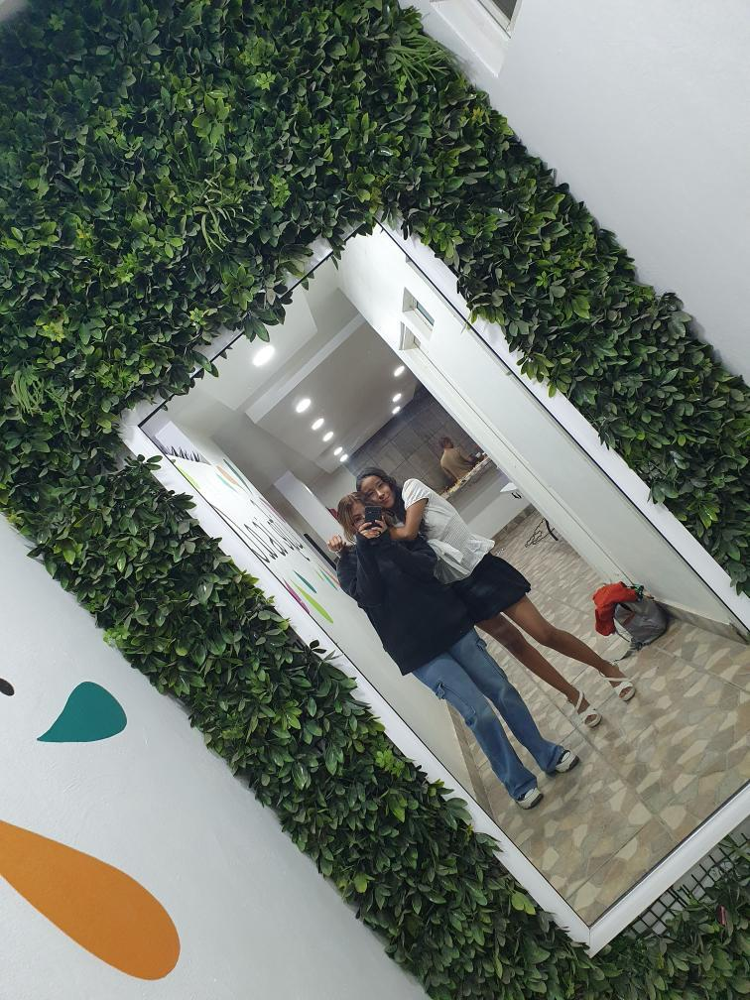
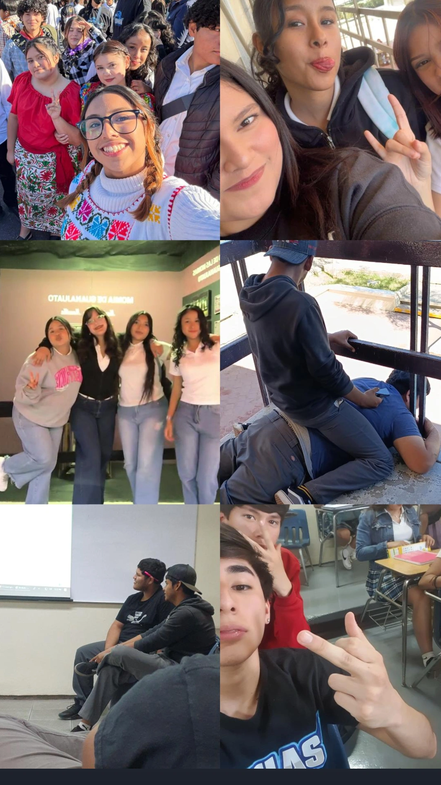

La primer amistad que les voy a mostrar es la mistad con la cual más e durado conociendo, nos hemos alejado un poco pero siempre volvemos a ser amigas, hasta la fecha ella es la ú´nica a la q ue realmente le tengo confianza tal vez no hablo seguido con ella pero siempre tenmos algo de que hablar, ella es única hermosa y cariñosa, me ah acompañado durante año, y apesar de lo que le eh tenido que aguantar sigo ahí, hubo un tiempo en el que ella no me hablba y era por que el lamentablemente sigue siendo su novio la obligo a dejarme de hablar, que por que a mi me prestaba mas atención, pueden creerlo, maldito morro inseguro, además, ese nomo de panteon, creia que como mi amiga es lesbiana ella se anomoraria de mí , yo estaba desde antes de el y no logro separnos hasta la fecha, aunque el la trate mal, ella se a quedado con él, con el tiempo aprendí que si un ser querido esta en una situación, en donde la pase mal y sea manipulada, no hay que alejarlos, por que solo cuasaras que mas se aferre a lo bueno de la persona. Les presento a Zaide mi mejor amiga, la e aguantado por 8 años, y espero que mas.

Ahora también hablaré de mis amigos de la secundaria, esos con los que compartido demasiados momentos, tuve peleas realmente fuertes con todos y cada uno de este grupo, pero al final simpre fuimos nosotros, cuando siento que estoy al borde de todo uno de ellos siempre tiene algo que derme que me sube los animos, son de esos amigos que te tiran hate, pero cuando realmente los ocupas está´n realmente me hace muy feliz tenerlos en mi vida, siento que sin ellos no seria la misma, o ya estaria en una fuerte depresió´n, ellos no me han dejado caer. Ellos son por orden el la fot Joshua (mi bbfi), Leonardo (el mas inteligente), Alex (el callado), Melody (mi niña hermosa, mi tsuki), yo jaja, y Camila (la timida y linda)

Mis ultimas amistades y las mas especiales al momento y estoy habalndo de mis amiguitos de la prepa esas con las que estoy campartiendo risas y momentos agradables, y desagradables no lo niego, pero si no estuvieran conmigo la prepa no seria tan comoda lose, los cuales siempre llevo en mis pensamientos, esos son los que veo y soporto dos los dias jajaja, los aguanto de ratos, pero son bien chilos si te tomas laterea de conocerlos, por que cuando me separe de ya sabes quien, ellos estuvieron ahí ellos se quedaron, cuando yo sentia que de neuvo la prepa se me venia encima, y yo se que proveblemete querra saber que paso entre Milca y yo pero sabe que ni yo tengo respuesta, ella fue mi 1 er amiga en la prepa, yo entre a 3er semestre a esa prepa y cuando entre ovbiamente todos tenia ya hechos sus grupitos, aunque yo habia conocido a Angel en la osos, por que estuvo en 2do allá, en ese entonces Chacon iba entrando y nos icmos amigos muy rapido, entonces el se junto con Angel, al tiempo eramos un grupo de 4 que completaba por Milca, Serrano, Kevin (el cual reprovo, y la rezón de la separación de Milca y yo), eramos nosotros siempre pero yo ya me hablaba con Perla y Karelly, solo a Milca no le gustaba que estuviera con ellas, ella me decia que yo la abandonaba para irme con ellas (solo les hablaba en el salón, entre clases), yo jamas me separaba de ella yo sabia su historia, pero no hice caso, al escuchar que ella jamas habia tenido amigas, ahora entiendo el por que, ela siempre supo justificar sus acciones, ella era mi dúo, puede preguntar a quien sea en el saló´n. Perla Karelly aú´n me preguntan que paso, pero ni yo se realmente, no voy a negar que me dolio que se alejara de mí, pues lo hizo sin explicación de hecho un dia antes de que ella se alejara de mí me dijo que estaban hablan mal de mí, entre estas personas Kevin el antes mencionado, el me tenia harta pues siempre me pegaba, algunas veces me moreteaba, o me ahorcaba, (decia que lo hacia por que me tenia confianza y yo era su gran amiga), le aguante mucho, hay otras cosas que no comentare para no meterlo en problemas,por eso llegado el ultimo dia que volteé a ver a Milca y no era la misma, ya no era mi amiga yo me sali de la prepa, no fue la mejor opción lose, pero fue mi única salida al momento, sigo siendo una adolescente con problemas y soluciones idotas, pues me cacharon y ahí el infierno emepezó, pues por si no tuviera problemas en mi casa por lo sucedido, en la escuala se volvio chisme decir a que me escape, Milca empezó a hablar mal de mí´, hatsa la fecha yo nunca e contado nada persona de ella así´, como ella hizo aquel día,al pasar el tiempo ella me pinto como la mala del cuento, la que no la dejaba desfrutar su vida, quien la alejo, y la obligo a solo estar con ella, ella podra tener su versión, pero esta es la mia, con mucho dolor la cuento pues yo se que soy monedita de oro, pero por lo menos una razón si queria y al no averla me lastimó, y es por eso que les tengo tanto cariño a Perla a Karelly y a mi befoncio del Serrano.
